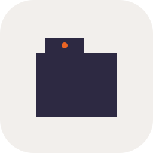
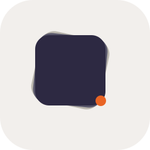

Version 3 · icons grounded in the liaison's actual workflow
→ See v4 (clip + highlight combo, no dot)
Six abstractions, each derived from a real object or gesture in the field liaison's day. Same review format: 16 / 64 / 256 px on warm canvas and dark cool surface.
Source: the trapezoidal metal binder clip on every clipboard the liaison carries from hospital to SNF.
Abstracted to a confident filled wedge with the brand-orange dot at the pivot point. Reads as a clip silhouette at scale, as a graphic shape at small.
On warm canvas
On dark surface
Source: the universal liaison gesture of folding a corner on a referral form to mark it for follow-up.
Card with a folded top-right corner, the flap rendered in a warmer cool tone to suggest the underside of the page. Adds dimension without rendering depth.
On warm canvas
On dark surface
Source: the manila-folder tab silhouette every records system uses; liaisons navigate cabinets and digital tabs by these shapes.
Folder body with a smaller stepped tab on the upper-left edge. The brand-orange dot acts as the tab's color label, the way real liaisons mark priority or payer category.
On warm canvas

On dark surface
Source: the literal liaison gesture of highlighting the answer (eligible / open episode / wrong payer) on a printed referral.
Heavy 'sella' wordmark with a primary-500 highlighter stroke through the x-height. The slight angle (-3°) sells the hand-drawn quality without going cute. Reads as a wordmark + signature gesture.
On warm canvas
On dark surface
Source: the phone call — the dominant communication channel between liaison, payer, and referral source.
Five vertical bars echoing an audio waveform; the loudest bar (the moment the answer arrives) is in primary-500. References the digital signal era while staying honest about the voice-call reality.
On warm canvas
On dark surface
Source: the spreadsheet, the EHR add-on, the payer portals — multiple sources synthesized into one row, one verdict.
Three records rotated through angles, resolving into one cool-700 card on top. Maps directly to the eligibility flow: many sources in, one decision out. The rotation implies process, not stasis.
On warm canvas

On dark surface
Notes: concept 04 draws type directly on transparent canvas, so it reads weakly on dark — would need a light-on-dark variant. Concepts 01 / 02 / 03 / 05 / 06 carry their own warm container and stay legible on either surface. Concept 02's flap is the smallest detail in the set — worth eyeballing whether the fold reads at 16px or just becomes a dark blob.